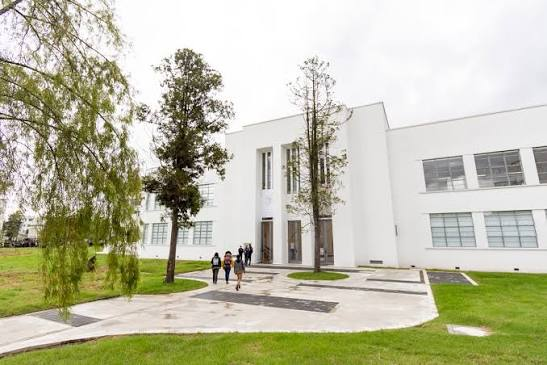

Gestión de riesgos
Identificación y evaluación de riesgos potenciales en el campus.
Sistema inteligente para la gestión, reporte y visualización de riesgos en entornos universitarios.
Empezar ahora
Nuestra arquitectura asegura una respuesta coordinada y eficiente ante cualquier eventualidad.
Identificación y evaluación de riesgos potenciales en el campus.
Facilita la comunicación de incidentes y situaciones de riesgo.
Presenta información relevante para la toma de decisiones en tiempo real.
Nuestra consola central integra múltiples fuentes de datos para proporcionar un panorama operativo unificado a los equipos de primera respuesta.
Mapa que muestra dónde se realizaron los respectivos reportes.
Presenta el número de riesgo según su categoría.
Muestra el listado de todos los reportes para efectuar la acción que se requiera.